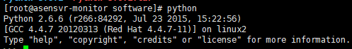
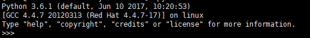

Python3.6的安装
这个专题讲解Python相关方面的内容，首先是运维方面，例如数据库，Linux等，后续会有Web，爬虫等。
环境设置
Linux系统为 Centos 6.8
Python环境为 Python 3.6
新增oracle用户
名字可随便取，我们脚本都放该用户下
[root@asensvr-monitor ~]# useradd oracle
修改密码
[root@asensvr-monitor ~]# passwd oracle
新建安装目录
[root@asensvr-monitor ~]# su - oracle
[oracle@asensvr-monitor ~]$ mkdir software
[oracle@asensvr-monitor ~]$ cd software/
安装Python3.6
1.由于系统安装完成后Python的版本为2.6，需先升级至3.6

2.下载安装文件并解压
cd ~/software
wget https://www.python.org/ftp/python/3.6.1/Python-3.6.1.tgz
gunzip Python-3.6.1.tgz
tar xvf Python-3.6.1.tar
cd Python-3.6.1
3.创建Python安装目录
mkdir /usr/local/python36
4.编译安装
cd Python-3.6.1
./configure --prefix=/usr/local/python36
make
make install
5.修改链接
mv /usr/bin/python /usr/bin/python_old
ln -s /usr/local/python36/bin/python3.6 /usr/bin/python
6.验证是否安装成功

yum问题处理
升级完之后yum会无法使用 这时需要修改yum可执行文件文件
将第一行改成 python2.6即可
vim /usr/bin/yum
#!/usr/bin/python2.6
至此Python 3.6已安装完成，下期将介绍如何连接Oracle数据库